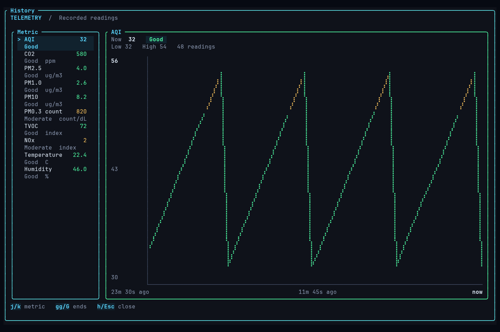
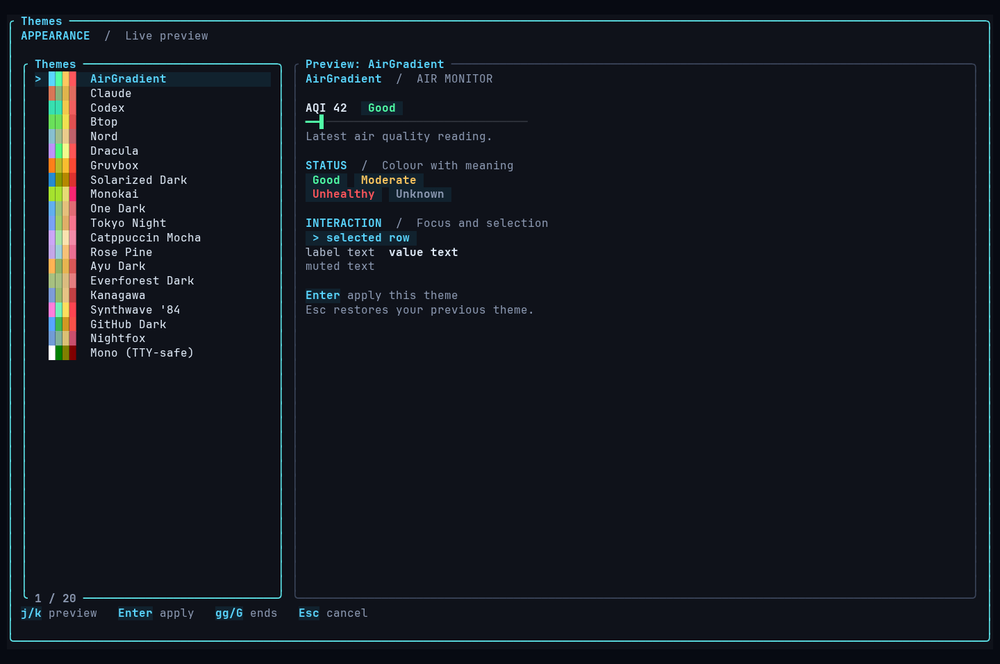

One glance. The whole room.
AQI, CO₂, particulates, VOCs, temperature, humidity. Status badges and banded gauges make the numbers readable.
A little clarity for the air around you.
Your AirGradient readings, right in your terminal.
No cloud. No account. No noise.
Built in Rust. Made for Linux. Yours to keep.
Your terminal, with a view.
Big readings. Clear signals.
20 themes. One local-first cockpit.

Press h. See the trend. History stays on disk between sessions.

Press t. Preview 20 themes. Enter keeps one. Esc reverts.
Real TUI renderer. Synthetic demo data, not live readings. Select a screenshot to see it full size.
A small tool with a clear job.
Read your room. Leave the rest alone.
AQI, CO₂, particulates, VOCs, temperature, humidity. Status badges and banded gauges make the numbers readable.
Sparklines for a quick check. Full-screen history for a closer look. Alerts on concerning crossings, not endless repeats.
Device to terminal over your LAN. No cloud account. No telemetry. Shared desktop settings, without losing unknown fields.
A dashboard when you want it.
Check once. Leave the dashboard open.
Or send JSON to your own tools.
airgradient-cliairgradient-cli --tuiairgradient-cli fetch --jsonairgradient-cli --tui --theme nordBring your AirGradient.
We’ll bring the terminal.
Linux amd64 + arm64
Free software. MIT licensed.
curl --proto '=https' --tlsv1.2 -sSf \
https://worxbend.github.io/airgradient-cli/install.sh | shChecks SHA256. Installs to ~/.local/bin.
Restart your shell before the next step if the installer updates PATH.
Prefer to inspect first? Read the installer.
airgradient-cli config set-url 192.168.1.201airgradient-cli --tuiA few things worth knowing.
An AirGradient monitor reachable on your LAN, with its local /measures/current endpoint available. Release binaries support Linux amd64 and arm64. The TUI needs an interactive terminal, at least 36 columns × 20 rows. Larger is better for seeing every metric.
No. The CLI reads your monitor directly over the local network. This website cannot read your device; the screenshots use synthetic demo data. Installing a release requires internet access.
Settings share $XDG_CONFIG_HOME/airgradient-desktop/config.json, falling back to ~/.config/airgradient-desktop/config.json. Unknown fields are preserved.
History stores up to 2000 readings at $XDG_DATA_HOME/airgradient-cli/history.jsonl, or ~/.local/share/airgradient-cli/history.jsonl. Set AIRGRADIENT_CLI_NO_HISTORY=1 to disable new history writes. Existing history remains readable.
Use airgradient-cli --tui --theme mono. It uses plain-Unicode icons and leaves your terminal palette alone. All readings have text labels, too.
Yes. Use airgradient-cli --tui --refresh 10 for this session, or airgradient-cli config set-refresh 10 to save it. The range is 5–3600 seconds; the default is 30.
A fresh website, shorter docs, and reproducible screenshots of the real TUI renderer. The v0.4.0 cockpit, commands, sensor parsing, and thresholds are unchanged.
Read the release notes